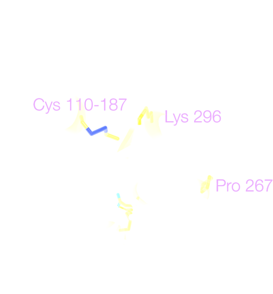

Fat-Soluble Vitamins
Vitamins are divided into two broad classes on the basis of solubility, those that are fat-soluble (and hence classed as lipids) and those that are water-soluble. The fat-soluble vitamins include A, D, E, and K. A.
Vitamin A
An example of a biologically important compound for which a number of cis,trans isomers are possible is vitamin A, a terpene. There are four carbon-carbon double bonds in the chain of carbon atoms bonded to the substituted cyclohexene ring, and each has the potential for cis,trans isomerism. There are 24 = 16 stereoisomers possible for this structural formula. Vitamin A is the all-E isomer.
Vitamin A, or retinol, occurs only in the animal world, where the best sources are cod-liver oil and other fish-liver oils, animal liver, and dairy products. Vitamin A in the form of a precursor, or provitamin, is found in the plant world in a group of tetraterpene (C40) pigments called carotenes. The most common of these is β-carotene, abundant in carrots but also found in some other vegetables, particularly yellow and green ones. b-Carotene has activity as an antioxidant; one of its functions in green plants is to quench singlet oxygen, which can be produced as a byproduct of photosynthesis. β-Carotene has no vitamin A activity; however, after ingestion, it is cleaved at the central carbon-carbon double bond followed by reduction of the newly formed aldehyde to give retinol (vitamin A).
 β-Carotene | enzyme-catalyzed cleavage and reduction in the liver ⟶ | 2 |  Retinol (Vitamin A) |
As you might suspect, β-carotene, C40H56, precursor to vitamin A, was first isolated from carrots. Dilute solutions of β-carotene are yellow, hence its use as a food coloring. In plants, it is almost always present in combination with chlorophyll to assist in the harvesting of the energy of sunlight and to protect the plant against reactive species produced in photosynthesis. As tree leaves die in the fall, the green of their chlorophyll molecules is replaced by the yellows and reds of carotene and carotene-related molecules. Compare the carbon skeletons of β-carotene and lycopene.
Fruits and vegetables contain a large number of yellow, orange, and red compounds, which are fat-soluble carotenoids. This group of compounds are used as pigments by plants, they are very stable inside live plant tissue and are biosynthesized via the terpene pathway, which is very efficient in terms of energy and nutrients. While a few types of carotenoids can be metabolized to retinol (vitamin A) in the human body, most of them have no known nutritional function for us. If vegetables or fruit are consumed together with fat, or even fried in it, the carotenoids are absorbed with the food and accumulate in fat tissues, which take on a yellow color—this can also be observed with animals that consume grass or other fresh plant foods.
Vitamin A is then oxidized, and one of the double bonds undergoes isomerization to produce 11-cis-retinal. The resulting aldehyde then reacts with a −NH2 group from a lysine residue of the protein, opsin, in the human retina to produce an imine group. The product of these reactions is rhodopsin, a highly conjugated pigment that shows intense absorption in the blue-green region of the visual spectrum.
|  | + | H2N−OPSIN | ⟶ |  Rhodopsin | + | H2O |
The retinal in Rhodopsin can absorb a photon of light, initiating a photoisomerization of the cis double bond to form a trans double bond. The resulting change in geometry triggers a signal that is ultimately detected by the brain and interpreted as vision in all vertebrates, arthropods and mollusks.
11-cis-Retinal | Light ⇌ Enzyme |  11-trans-Retinal |
The primary event in vision is absorption of light by rhodopsin in rod cells of the retina of the eye to produce an electronically excited molecule. Within several picoseconds (1 ps = 10−12 s), the excess electronic energy is converted to vibrational and rotational energy, and the 11-cis double bond is isomerized to the more stable 11-trans double bond. This isomerization triggers a conformational change in opsin that causes firing of neurons in the optic nerve and produces a visual image. Coupled with this light-induced change is hydrolysis of rhodopsin to give 11-trans-retinal and free opsin. At this point, the visual pigment is bleached and in a refractory period. Rhodopsin is regenerated by a series of enzyme-catalyzed reactions that converts 11-trans-retinal to 11-cis-retinal and then to rhodopsin.
Vitamin D
Vitamin D is the name for a group of structurally related compounds that play a major role in the regulation of calcium and phosphorus metabolism. A deficiency of vitamin D in childhood is associated with rickets, a mineral-metabolism disease that leads to bone defects that form bowlegs, knock-knees, and enlarged joints. Vitamin D3, the most abundant form of the vitamin in the circulatory system, is produced in the skin of mammals by the action of ultraviolet radiation on 7-dehydrocholesterol (cholesterol with a double bond between carbons 7 and 8). In the liver, vitamin D3 undergoes an enzyme-catalyzed, two-electron oxidation at carbon 25 of the side chain to form 25-hydroxyvitamin D3; the oxidizing agent is molecular oxygen, O2.
Vitamin E
Vitamin E was first recognized in 1922 as a dietary factor essential for normal reproduction in rats, hence its name tocopherol from the Greek: tocos, birth, and pherein, to bring about. Vitamin E is a group of compounds of similar structure, the most active of which is α-tocopherol. This vitamin occurs in fish oil, in other oils such as cottonseed and peanut oil, and in leafy green vegetables. The richest source of vitamin E is wheat germ oil.
In the body, vitamin E functions as an antioxidant; it traps peroxy radicals of the type HOO⋅ and ROO⋅ formed as a result of enzyme-catalyzed oxidation by molecular oxygen of the unsaturated hydrocarbon chains in membrane phospholipids (see Chemical Connection: “Antioxidants” in Section 8.7). There is speculation that peroxy radicals play a role in the aging process and that vitamin E and other antioxidants may retard that process. Vitamin E is also necessary for the proper development and function of the membranes of red blood cells.